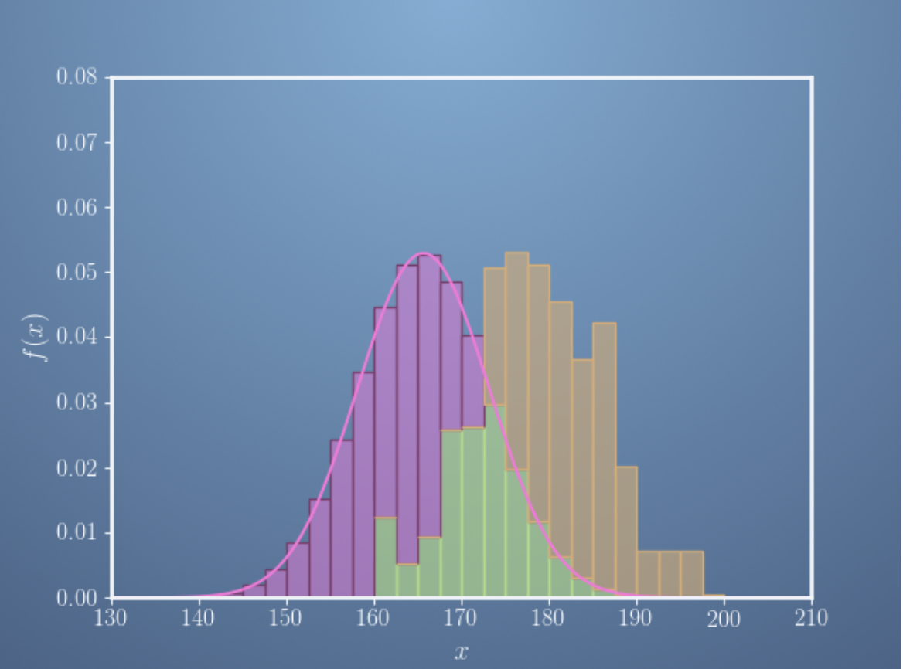
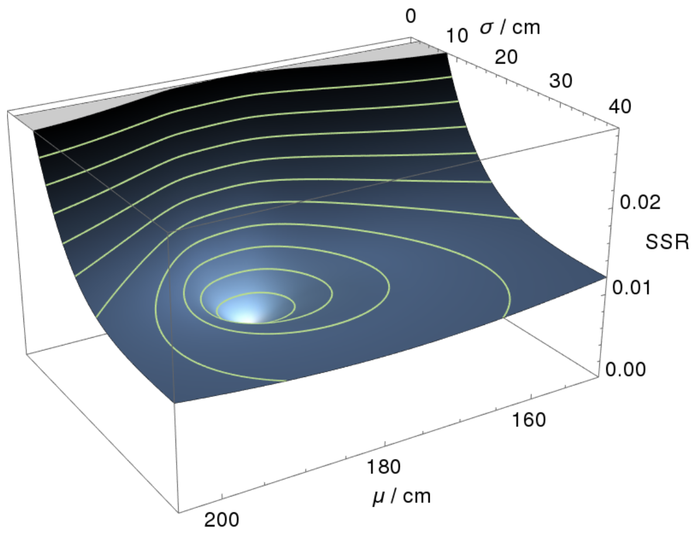
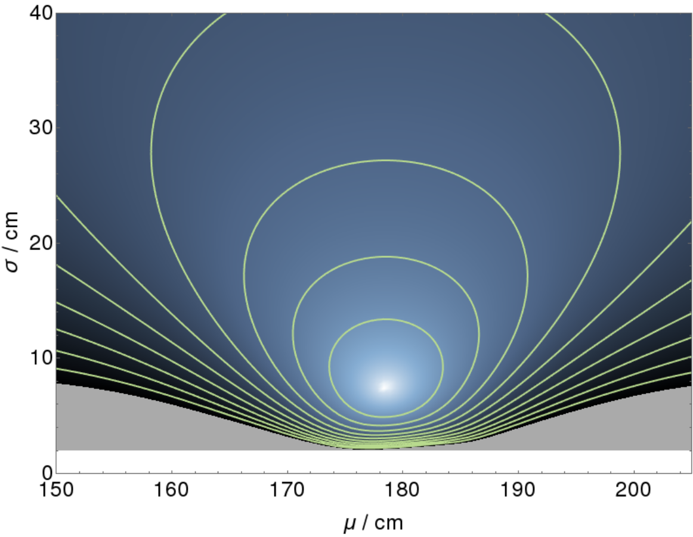
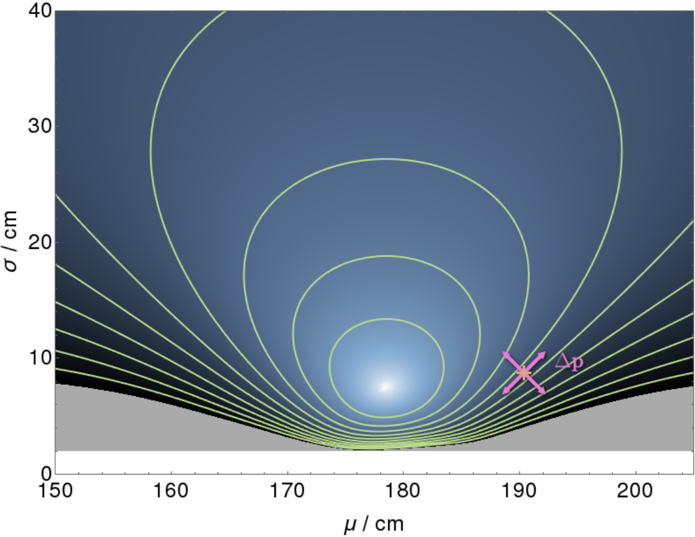

学习目标
- Recall how machine learning, vectors and matrices are related.
- Interprest how changes in the model parameters affect the quality of the fit to the training data.
- Recognize that variations in the model parameters are vectors on the response surface - that vectors are a generic concept not limited to a physical real space.
- Use substitution/ elimination to solve a fairly easy linear algebra problem.
- Understand how to add vectors and multiply by a scalar number.
如何在这门课获得成功
- Read the syllabus: all the important information can be found here
- Make a concrete and reasonable study plan.
- Log on to the class at least 3 times a week.
- Ask questions!!
- Make connections with your fellow learners.
机器学习和线性代数的关系
Linear algebra is defined to be study the vectors, vector spaces and a mapping between vector spaces.为什么需要线性代数
Problem of solving the simultaneous equations.
$$
\begin{equation}
\begin{cases}
3x + 2y &=& 5\\
x+4y &=& 4\
\end{cases}
\end{equation}
$$The optimization problem of fitting some data with an equation with some fitting parameters
在整个机器学习中，线性代数主要用来解决以上两个问题。
向量操作
Vector 的不同表现形式
- math
- space 中个一个点
- 一组有序数对：$(x_1x_2,…,x_3)$
- 一个有方向、有大小的线段(几何视角)
- 物理
- 三位空间中的一个点
- 四维空间（增加时间维度）中的一个点
- 计算机科学/统计学/机器学习
- 一个数组/list（programming language）
- 样本的若干属性（attributes）的一组值
- 一个example的feature values
名称不一样，但本质大同小异。本课程中我们采用：Point which can move around in a space 这一说法。
向量的基石
- 向量加法-按照四边形法则
$$
\vec r+\vec u = \vec v
$$向量加法的意思是：从原点开始沿着$\vec r$ ，接着沿$\vec u$ 方向走。 - 数乘
$$
\vec r^\prime =a\vec r
$$数乘的意思是：对向量$\vec r$ 进行缩放（scale）,如果$a>0$, 沿着$\vec r$ 相同的方向缩放；如果 $a<0$ , 沿着$\vec r$ 相反的方向缩放，缩放的倍数为$a$.
向量加法和数乘是之后所有基于向量的其他概念的基石。向量空间的定义也依赖于这两个操作。
坐标系统( coordinate system)
现有两个标准正交向量$\vec i,\vec j$ 定义一个 vector space,
$$
\begin{align}
\vec r &= 3\vec i + 2\vec j=\begin{bmatrix}
3\\
2
\end{bmatrix}\\
\vec s &= 2\vec i - 3\vec j = \begin{bmatrix}
2\\
-3
\end{bmatrix}
\end{align}
$$
这样我们就在2个base vectors和向量加法、数乘操作的基础上定义了一个坐标系统:$\rightarrow$ 在以 $\vec i$, $\vec j$ 为基的空间中的任意一个向量 $\vec r$, 都唯一对应一个坐标。
数据科学中的向量
首先要建立以下认知：
- 向量是空间中的一个点（vector is a point in some space）
- 空间有很多种
- data space(with respect to measured data!)
- vector space
- parameter space
- function space， etc.
- 向量可以是：数据本身或者模型参数。这取决于你把什么内容组以向量的形式组织：是training data or parameters of a model.
有了上述认知，我们就可以采用基于向量的操作处理机器学习中所要解决的问题。
Getting a handle on vectors
一个模型和向量有什么关系？其实，他们之间的关系基于如下因素：
- 模型含有参数（绝大部份模型都包含参数，参数是衡量模型能力大小的标志之一）
- 不同的参数即对应不同的具体函数
- 不同的函数在处理数据时性能不同
- 因此，适当的选取参数对于模型最终性能的表现起到了决定作用。
因此，当我们看到向量的时候，要问自己如下问题：
- 这个向量是模型参数的组织形式，还是数据的组织形式？
- 这个参数是什么模型的参数？
- 如何选取合适的参数，使得模型性能达到最好？
- 这个所谓的模型“性能最好” 的测量标准是什么，如何评价好坏？
探索参数空间（parameter space）
一个例子
一个随机变量$X\thicksim N(\mu,\sigma)$ , 其PDF$f_X(x)=\frac{1}{\sigma \sqrt{2\pi}}exp(-\frac{(x-\mu)^2}{\sigma ^2}).$
其中$(\mu,\sigma)$ 就是其密度函数的参数（parameters），有如下结论：
$$
(\mu_1,\sigma_1)\ne (\mu_2,\sigma_2)\Rightarrow f_X^1\ne f_X^2
$$
换句话说，就是上一小节我们提到的：不同的参数对应不同的函数. 参见下图，

从参数到参数空间
机器学习中一个最重要的任务是：Fit a model to data in order to predict the underlying distribution.
以高斯分布为例（前文），我们将它的两个参数 $(\mu,\sigma)$ 组织成向量的形式，
$$
\mathbf{p}=\begin{bmatrix}
\mu \\
\sigma
\end{bmatrix}
$$
那么k组不同的参数$(\mu_1,\sigma_1),(\mu_2,\sigma_2),…,(\mu_k,\sigma_k)$将对应k个参数向量（parameter vector）: $\mathbf{p_1},…,\mathbf{p_k}$, 这些向量将张成一个 vactor space, 由于每个向量的components 都是随机变量$X$ 的密度函数 $f_X(x)$ 的参数，因此这个 vector space 也是一个 parameter space.
如何衡量参数估计的结果？（Evaluation metric of estimating parameters）
之前所说的选择合适的参数使得模型性能好是一种通俗的说话，在机器学习或者统计的范畴里，这个问题叫做：参数估计（parameter estimating）。
由于不同的估计方法、人们不同的偏见（bias），使得面对同样的数据，我们估计出来的参数往往是不一样的。那么能否有一个大致的标准来指导我们进行参数估计呢？这个标准是有的（而且还不唯一！）：
我们需要使得我们估计的参数与某组客观存在的参数的差异/误差尽可能小！ 我们也把这个差异/误差叫做：Error, Loss, Residuals, etc.(The difference between the measured data and the model prediction.)SSR (Sum of Squared Residual):
假设我们已经估计好了参数，那么我们可以使用这个模型进行在对新的数据进行预测。我们对模型的认知有如下几个方面，
- 如果一个模型很好地拟合了measured data（training data），我们才说这是好的模型。
- 参数可以取各种不同的值（values），我们知道参数的一些取值是比另一些好的（更好的fit data）。
- 那么现在的问题是，如何判断好坏？
如下图所示，粉色的是已经估计好参数的模型（确定了具体参数的密度函数），橘色代表data（frequency histogram）。

Residual: 粉色和橘色在同一横坐标下的高度差。
SSR 定义：
$$
\begin{align}
\text{SSR}(\mathbf{p})&=|f_{data} - g_p|^2\\
&= \sum_{\mu}\sum_{\sigma}(\mu_{data}-\mu_g)^2 + (\sigma_{data} -\sigma_g)^2
\end{align}
$$
我们可以为SSR(p) 设定一个阈值，比如：threshold=0.00001，当其小于threshold的时候我们认为模型 $g_p$ 就已经足够好了。
之前我们提到，我们假设参数已经估计好了，于是在SSR的指导下，我们已经可以判断模型好坏了。但现在还遗留了最后一个问题：参数是怎么估计的？
如何估计参数？
因为每个参数向量(each parameter vector) 都代表了不同的函数， 每个参数向量都对应有一个SSR值。we can draw the surface of SSR values over the space spanned by these $\mathbf{p}$ , 比如前面例子中的 $\mu$ 和 $\sigma$.
下图是 Surface of SSR values 的展示，

我们采用一种 “Top-down” 的视角看这个surface，把它看作一个等高线图（contour map），其中每个等高线代表了SSR的一个固定取值（constant value）。
机器学习的目的是找到那个能够尽可能好地拟合数据的参数集（parameter set），有了我们前面的知识，这个问题就转化为 在下图所示空间中寻找一个最低点-全局最低（“这个空间”，就是指parameter space）

只要我们有办法在这个空间找到最低点，那么所有问题就都解决了。然而，找到最低点的方法是什么？答案是：梯度下降（Gradient descent），

Gradient descent-一种优化算法
我们可以定义另一个与 $\mathbf{p}$ 在同一个空间的vector,$\Delta \mathbf{p}\rightarrow$它将告诉我们对$\mathbf{p}$ 做什么改变将会更好地拟合数据:
例如： a model with parameters $\mathbf{p^\prime=p+\Delta p}$ will produce a better fit to data, if we can find a suitable $\mathbf{\Delta p}$.
梯度下降是本系列课程中第二门课程的重点内容之一，在此不做过多细节介绍。